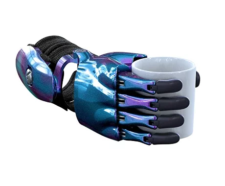

Фотография протеза
СОВРЕМЕННЫЙ И ЛЁГКИЙ ПРОТЕЗ КИСТИ
Активный протез кисти CYBI Fingers
Активный протез кисти CYBI Fingers
Подать заявку на протезированиеСовременный и легкий протез-гаджет для протезирования на уровне кисти с подвижным кистевым суставом.
Идеален для раннего протезирования начиная с 2-х лет или если вам не подходит бионический протез. Протез работает без электроники и не боится воды. Дизайн протеза полностью кастомизируется под вас на этапе заказа.
Особенности нашего протеза
-
Супер легкий и интуитивно понятный
Тяговые КИБИ-протезы помогают детям и подросткам тренировать мышцы кисти и предплечья, что позволяет в дальнейшем успешно использовать биоэлектрические протезы.
 -
Супер легкий и интуитивно понятный
Тяговые КИБИ-протезы помогают детям и подросткам тренировать мышцы кисти и предплечья, что позволяет в дальнейшем успешно использовать биоэлектрические протезы.
-
Супер легкий и интуитивно понятный
Тяговые КИБИ-протезы помогают детям и подросткам тренировать мышцы кисти и предплечья, что позволяет в дальнейшем успешно использовать биоэлектрические протезы.
Фотографии людей с нашим протезом
Закажите протез для себя или ребенка от 2-х лет с культей предплечья и подвижным кистевым суставом
Создайте себе уникальный протез руки
Информация о протезе
Максимальная нагрузка на пальцы — до 5 кг
Возможность поднимать тяжести — до 10 кг
Материалы — нержавеющая сталь + алюминий + полиамид
Вес протеза — 300-500 грамм
Протез КИБИ — это медицинское изделие, которое изготавливается по индивидуальным заказам. Имеются противопоказания по использованию, необходимо получение консультации специалиста.
Максимальная нагрузка на пальцы — до 5 кг
Возможность поднимать тяжести — до 10 кг
Материалы — нержавеющая сталь + алюминий + полиамид
Вес протеза — 300-500 грамм
Опрос для определения типа вашего протеза
Ответьте на 3 вопроса и мы подберем современный протез руки под ваш случай
В конце теста мы покажем какие протезы доступны по госпрограмме и откроем доступ к чек-листу для получения протеза бесплатно!